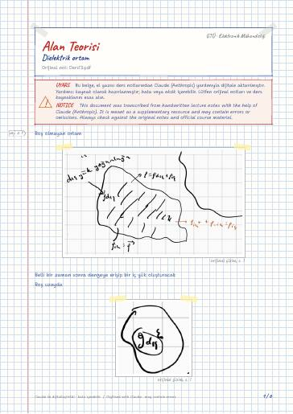

Elektromanyetik Alan Teorisi · Dijital ders notu
Dielektrik ortam
- Ders
- Elektromanyetik Alan Teorisi (ELM341)
- Dönem
- 5. Dönem · 2023–2024 Güz
- Biçim
- PDF · 6 sayfa · 0,2 MB · el yazısı görünümlü LaTeX
- Orijinal not
- Ders13.pdf

Uyarı: Dijital notlar, el yazısı notlardan Claude (Anthropic) yardımıyla oluşturulmuştur; yardımcı kaynak olarak hazırlanmıştır ve hata içerebilir. Orijinal notları ve resmi ders kaynaklarını esas alın.
The digital notes were created from the handwritten notes with the help of Claude (Anthropic); they are meant as a supplementary resource and may contain errors. Always rely on the original notes and the official course materials.
The digital notes were created from the handwritten notes with the help of Claude (Anthropic); they are meant as a supplementary resource and may contain errors. Always rely on the original notes and the official course materials.
Notun metni
Düz metin olarak göster (formüller ve çizimler yoktur)
Boş olmayan ortam
Belli bir zaman sonra dengeye erişip bir iç yük oluşturacak
(Ortamın fiziksel varlığından ötürü dış yük tarafından yaratılan E 'nin etkisiyle oluşan yüklerin yoğunluğu)
= _dış + artık ortamı boş gibi düşünebiliriz
İçinde bir takım dipollerin oluştuğu ortama dielektrik ortam denir. Böyle bir ortamda ile aynı yöndedir, dolayısıyla da
ortam basitse kapa elektrik alana bağımlı değil sabittir.
Yüzey üzerinde potansiyel sabitse ve içeride yük yoksa iç bölgede potansiyel sabittir, elektrik alan de sabittir, ve içerde =0 / /